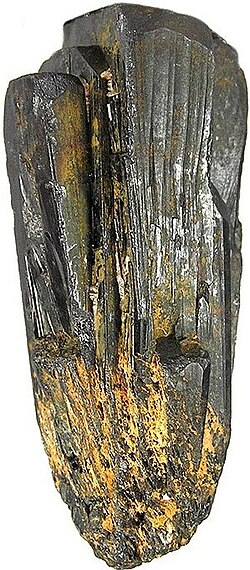

Coltan is a mineral composed of two main elements: columbite and tantalite, with tantalite being the most valuable due to its high content of tantalum.
Tantalum is a rare metal used in many electronic devices due to its exceptional properties, such as:
- Corrosion resistance
- Excellent electrical conductivity
- Ability to withstand high temperatures
These properties make it essential in the production of electronic components, such as capacitors used in devices like smartphones, cameras, and gaming consoles.
Why is it important?
- Coltan and Technology: Coltan is essential for improving the energy performance of modern electronic devices.
- Global Availability: About 80% of the world's coltan reserves are located in the Democratic Republic of Congo.
- Economic Importance: Coltan is crucial for the global electronics industry, which relies on this mineral to produce smaller, more powerful devices.
Despite its importance, coltan extraction in Democratic Republic of Congo is controversial, linked to armed conflicts and human rights violations. However, it remains essential for powering modern technologies and improving the energy efficiency of electronic devices.